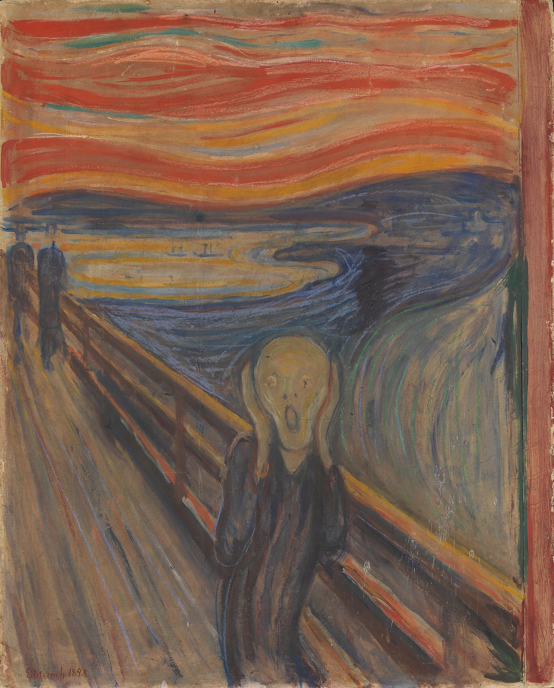

Quella mattina lo studio sapeva di acquaragia e giorni vecchi. Il caffè era freddo da ore, intoccato. Edvard stava seduto con la fronte tra le mani, non per stanchezza del corpo — ma per qualcosa di più antico, che abitava le ossa. Il peso silenzioso di chi ha visto sparire le persone amate senza poter fare nulla. Sua madre. Sua sorella. Assenze che non si chiudono mai del tutto. Fuori la strada faceva rumore di vita. Si alzò. Forse l'aria avrebbe aiutato.


Li trovò al tavolino di un piccolo caffè vicino al porto, giacche ancora addosso e bicchieri già mezzi vuoti. Ridevano di qualcosa. Edvard si sedette, ordinò qualcosa che non avrebbe bevuto. Fuori il fiordo brillava di una luce tarda e arancione. Era una sera come tante. Solo che per lui non lo era.
Le parole degli amici arrivavano, ma come attraverso uno spessore opaco. Poteva vederli gesticolare, sentire le loro risate rimbalzare sulle pareti, ma non riusciva a entrarci dentro. Era come guardare la vita da dietro un vetro sporco: tutto al suo posto, tutto irraggiungibile. Continuò a fissare il fondo della tazza.


"Andiamo verso Ekeberg," disse uno dei due, con la leggerezza di chi non sa il peso delle parole. "L'aria del fiordo ti farà bene. Sei pallido come un fantasma." Edvard alzò gli occhi. Il tramonto stava diventando qualcosa di strano — rosso troppo rosso, nuvole fatte a pennellate larghe e nervose. Annuì, si alzò, seguì gli amici verso la collina.
Salendo, Edvard camminava un passo indietro rispetto agli altri. Poi vide le mura del manicomio di Gaustad stagliarsi contro il cielo acceso — grigie, mute, con le finestre cieche. Lì dentro era rimasta sua sorella, anno dopo anno, mentre lui continuava a vivere fuori. Il senso di colpa non aveva un nome preciso: era solo una pressione al centro del petto. I suoi amici continuarono a camminare. Lui si fermò un momento, e il tramonto gli colorò la faccia di rosso.


Poi arrivò il suono. Non veniva da nessun posto preciso — era nel vento, era dentro di lui. Il grido che la sorella non aveva mai lanciato, quello che aveva trattenuto per anni tra quelle mura, che nessuno aveva mai sentito. Edvard portò le mani al viso. Il cielo si torceva, i suoi amici erano già lontani sul ponte — due sagome inconsapevoli. Lui era solo, e l'urlo della natura intera si abbatteva su di lui come un'ondata.
Non c'è più distanza tra dentro e fuori. Il cielo urla, il fiordo urla. La figura sul ponte — mani premute sulle orecchie, bocca spalancata — non sta cercando di fermare il suono. Sta urlando per esistere ancora, per non essere inghiottita dallo stesso silenzio che aveva inghiottito sua sorella. Non è il grido di un uomo che ha paura. È il grido di un uomo che finalmente sente tutto.
